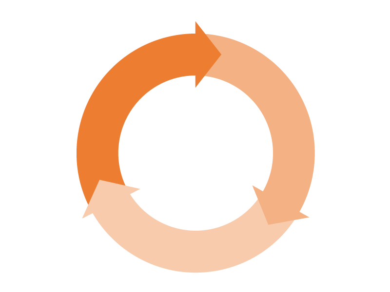

home > 기술/연구 > 품질경영
품질경영
"고객감동"을 품질경영의 핵심가치로 정의하고
지속적인 개선과 혁신을 위한 체계적인 품질경영시스템을 구축, 운용하고
있습니다.

품질철학
자율
자부심
고객과의 신뢰
우리는 세계 최고 조선소의 주인으로서,
스스로 최선의 가치를 차출하여 고객과 깊은 신뢰를 나눈다.
품직철학의 실천을 위하여
- 1. 고객과 약속한 사항은 고객이 요구하기 전에 실행한다.
- 2. 품질은 내 손에 달려 있음을 명심한다.
- 3. 세계 최고의 조선소에서 초일류 제품을 만들고 있음을 기억한다.
- 4. 더 나은 제품과 서비스의 품질향상을 위하여 쉼 없이 배우고 연구한다.
- 5. 내가 하는 일은 한번에 올바르게 실행한다.
품질경영
시스템 운영
- ISO 9001:2015 인증
- ISO/TS 29001 인증
- ISO 3834-2 인증
최고의 서비스
- 품질정보시스템 운영
(I-QMS/C-QMS/M-QMS) - 고객만족도 조사
(건조 중/인도 후)및 반영
최적화된
품질관리
- LINE QC 운영
- IN-PROCESS 관리
- 품질문제 사전예방체계
구축
무결점
제품생산
- 전문화된 검사인력
- Risk 사전 발굴/반영
- 사내/외 협력사 품질관리